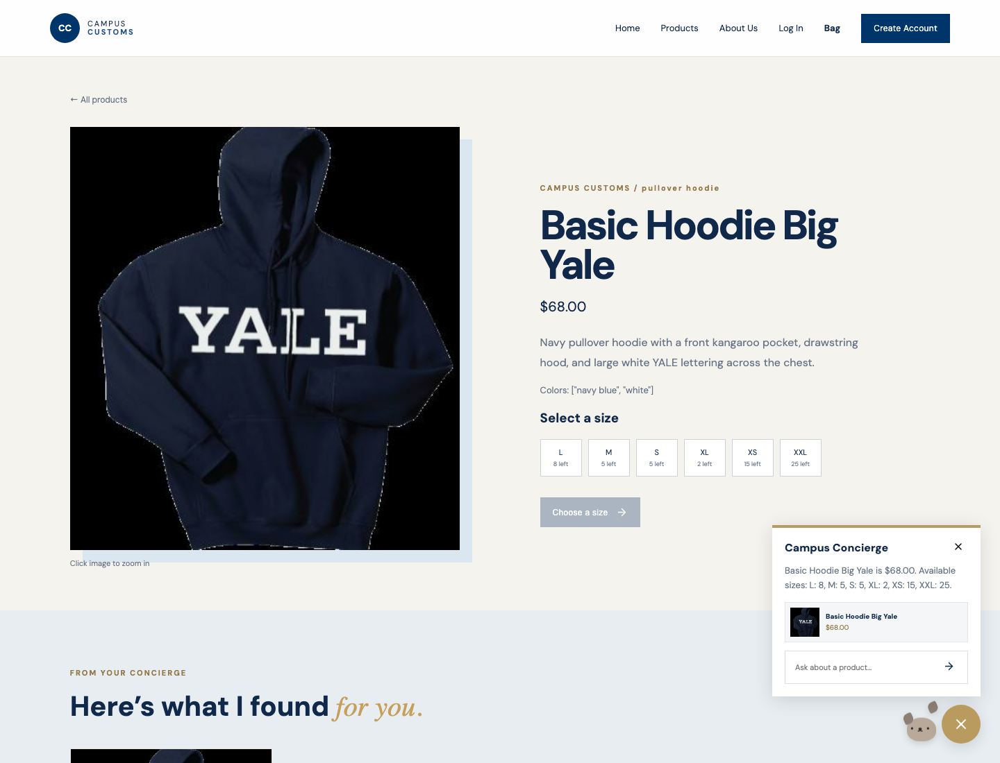
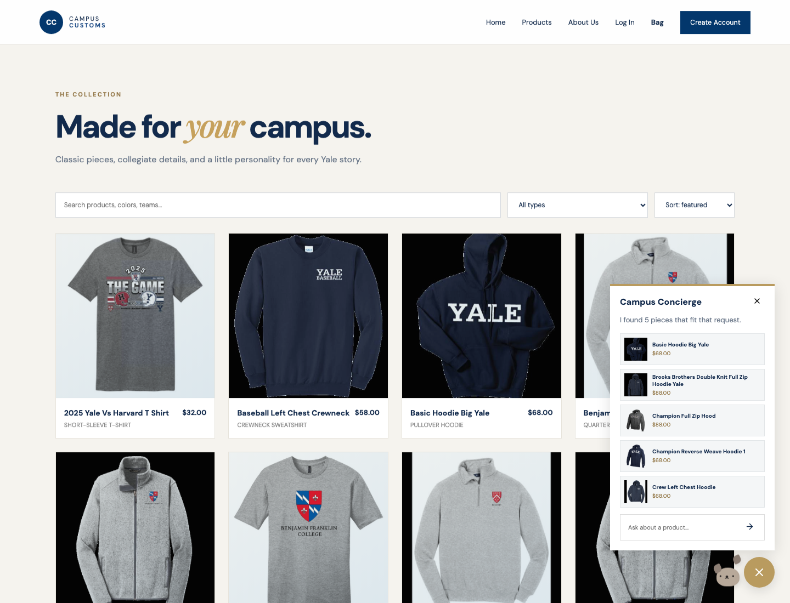
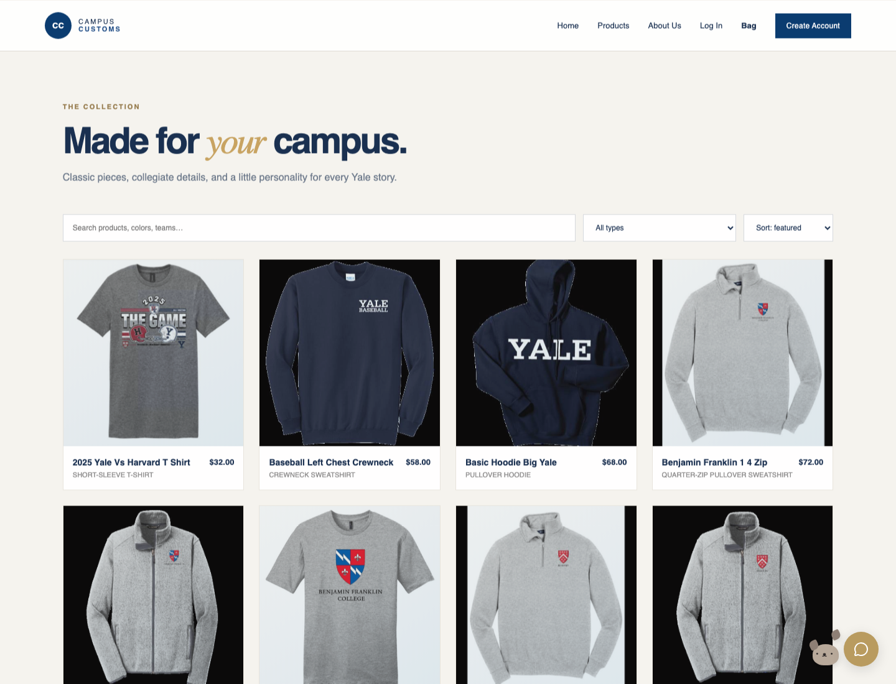

Current build evidence: this standalone package contains all 102 catalogue products, 612 size-inventory rows, and embedded product photos. The screenshots below were captured from the current packaged site.
1. Chat: product price and size-level inventory

What this proves: On the Basic Hoodie Big Yale page, “Do you have this in medium?” uses the current product context. The concierge reports the exact $68.00 price and lists Medium as 5 left alongside the other size quantities; the same size tiles are visibly selectable on the detail page.
2. Category question: dynamic product cards

What this proves: “What hoodies do you have?” returns five matching hoodie cards with real photos, names, and prices in the concierge. The “From your concierge” page section is also triggered, and each card uses the existing product-detail link.
3. Problem 9 usability feature: catalogue controls

What this proves: The live Products page places search, garment-type filtering, and price sorting above the full visual catalogue. A shopper can narrow the 102-piece collection without scrolling through every item.